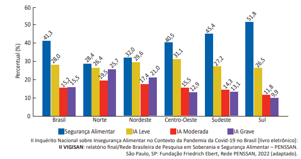
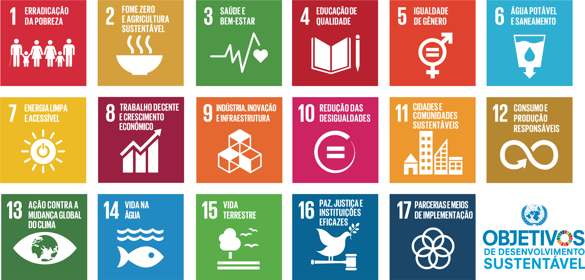

Insegurança Alimentar
Segundo o II Inquérito Nacional sobre Insegurança Alimentar, mais de 33 milhões de brasileiros passam fome. Outros 70 milhões vivem em situação de insegurança alimentar moderada ou leve.

Juntos por um mundo sem fome
O Objetivo de Desenvolvimento Sustentável número 2 busca acabar com a fome, alcançar a segurança alimentar, melhorar a nutrição e promover a agricultura sustentável até 2030. Atualmente, mais de 700 milhões de pessoas no mundo ainda sofrem com a fome.
No Brasil, apesar dos avanços históricos, o número de pessoas em situação de insegurança alimentar voltou a crescer nos últimos anos. A ODS 2 é um chamado à ação para governos, empresas, organizações e cidadãos.
A segurança alimentar vai além de simplesmente ter comida no prato. Ela engloba acesso, disponibilidade, utilização e estabilidade dos alimentos ao longo do tempo.

As metas do ODS 2 foram definidas pela ONU e devem ser alcançadas até 2030. Veja abaixo as principais:
Dados recentes apontam a urgência de ações concretas no combate à fome e à insegurança alimentar no país.
Segundo o II Inquérito Nacional sobre Insegurança Alimentar, mais de 33 milhões de brasileiros passam fome. Outros 70 milhões vivem em situação de insegurança alimentar moderada ou leve.

A agricultura familiar é responsável por 70% dos alimentos que chegam à mesa dos brasileiros. Apoiar o pequeno produtor é fundamental para garantir a soberania alimentar do país.

Combater a fome é uma responsabilidade coletiva. Existem diversas formas de contribuir, desde pequenas ações do cotidiano até engajamentos maiores:

Conheça organizações e iniciativas que trabalham pelo fim da fome no Brasil e no mundo:
